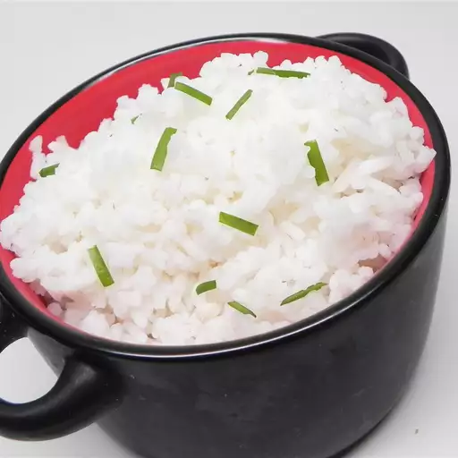

Rice

Learn how to make white rice with perfect flavor. It's simple and easy, yet tasty. Being Puerto Rican, I love rice!
Ingredients
- 1 tablespoon canola oil
- 2 cups white rice
- 1/4 teaspoon garlic powder (Optional)
- Salt to taste
- 2 cups boiling water
Steps
- Heat oil in a large saucepan over medium heat.
- Add rice, garlic powder, and salt.
- Pour in boiling water to cover rice by about 1 inch; bring to a boil.
- Reduce heat to low, cover, and simmer until water is absorbed and rice is tender, 20 to 30 minutes.